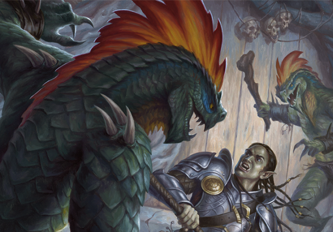

Our Heroes:
- Hector the Well Endowed

- Thalemas the Forgotten

- Tiny Nuggins

- Nightman

- Billy Stubhorn

Campaign 3: "Danger at Dunwater"
Our Heroes:
Episode 6 (cont)
At the council, they meet 2 new members – Eliander Fireborn, a male human who was previously a general in Keoland’s army and thus very loyal to the king, and Manistrad Copperlocks, a female dwarf who is there to promote the mining interests just north of Saltmarsh. The first order of business is for the group and council to determine if the ship was an operation of mere bandits or a more sinister operation led by pirates (likely from the Sea Princes). Upon deliberation The parties determine that this is likely a pirate threat, to which Gellan Primewater vehemently objects, while Ander Solomer and Eliander happily approve. After the operation is deemed an act of piracy, Eliander Fireborn declares that ship be seized. Aghast, our heroes object, claiming they rightfully won the prize. Gellan interjects and says he would be happy to supply the party with a smaller, more suitable, sloop in exchange for the massive, hardly manageable (by the party’s size), brigantine. The party decides this is a fair, and opportune, trade and agree. Next the parties vote nay to a town curfew, considering the new-found threat of a potential lizard-folk invasion. While Eliander and Anders are upset with the decision, the party, along with Gallen and Eda are happy with the retention of freedom and prevention of potential unrest. At last, the party is dismissed and encouraged to return once the council decides privately what to do about the threat of invasion. As the party leaves the council, they are approached by a cloaked man, face hidden. He gives the group a terms of trade note written in Draconic and English with the signatures of an unknown smuggler, Gallen Primewater, and a Lizard-folk handprint. It appears, per this document, that the weapons smuggled were a deal the Gallen helped broker.
While awaiting being summoned by the council our heroes tend to their personal lives. Hector studies and practices his athletic skills to become more dexterities, Thalemas reads books pertaining to druid spells, Nightman meditates and interacts with the source of his warlock power, tapping into more. Tiny researches his family and discovers that his father became an evil man. Upon this discovery, Tiny vows to fight all evil to undo his father’s past. During meditation, Tiny is visited by the angle Michael and bestows upon Tiny greater strength to help him uphold his vow. Billy ventures back home for a while to study druidic art, but quickly returns to Saltmarsh where he helps with beautification by planting vegetation on houses. He also immerses himself into Saltmarsh life by frequenting pubs, where he often times runs into the lush, Hector. Shortly before they are summoned by the council, Thalemas and Billy her a voice coming from the Sea-Grove of Obad-Hai. Here they meet Ferrin Kastilar a male druid Halfling. Ferrin informs Billy that it was he that Billy heard a summoning from and not Thalemas. Ferrin was calling any near druids to help with the growing threat of the Dredwood. Ferrin then tells Thalames that Thalames was once the child of a family who was a part of an operation to clear the Dredwood of this evil. Thalames’s family used their fire magic to attempt to cleanse the forest. However, they were overrun when Thalames was a small child. Thalames was the only survivor. Ferrin’s life objective was always to protect the region from the always evil Dredwood, but he now was tasked then tasked with caring for small Thalames. Thus, he placed the young boy in the care of a fisher’s family and watched from afar. Ferrin warns the two druids that if action isn’t taken soon, the Dredwood’s evil would soon overcome the town of Saltmarsh. He pleads with them to continue with their mission, as it might relate to the Dredwood’s threat, but to return to him when they finished.
While the druids are gone, Nightman visits the Temple of Procan. Here he meets Wellgar Brinewater, a male half-orc commoner. Wellgar, a one legged former whaler, leads a congregation who prays for lost sailors. Wellgar knows of nearly every sunken ship and lost sailor from in and around Saltmarsh’s coasts. He informs Nightman that if he wishes, Wellgar has a mission for him and his party.
After their down time, the party is summoned by the council. Here the council informs the party that they would like the heroes to go to the lizard-folk lair and investigate the size of their army and what their intentions are. The council pleads that the party not attack unless in self-defense. The council claims that Saltmarsh isn’t ready for war and doesn’t want to provoke one unless it is on their terms.
Thus, the adventurers take their new sloop and set sail down the coast to the mouth of the Dunwater River. It is at the mouth of the Dunwater that the ship notices a massive Chuul emerging from the water. Immediately, Tiny, our ship’s captain, calls to Hector to fire the ballistae. The massive arrow pierces into the Chuuls thick chest, but doesn’t stop him from smashing his claws upon the ship bow. Tiny again calls for another ballistae shot, which rips off the Chuuls left claw. Simultaneously, Nightman and Thalames hit the Chuul with Eldritch blast and a flame blast respectively. Near dead, the Chuul makes a final attempt with his remaining claw to grab ahold of the ship. His vain attempt is met with yet another ballistae arrow, killing the mighty Chuul. The party nets the Chuul’s carcass and stores it in the hull.
After killing the Chuul, the party uses the map they bought from Winston’s store to reroute to a trafficked path leading to the lizard-folk’s lair. While traveling along the path, the group comes to a river crossing to an island within the river. After crossing they are assaulted by 6 bullywugs. The party struggles a bit with the six measly pests, but ultimately overcomes them. Upon dispatching the 6, the part hears a horn blast and are met with 2 more bullywugs, led by a bullywug shaman. The shaman empowers the 2 minor villains and they proceed to wreak havoc on our heroes. Nonetheless, the gang prevails. Weakened and weary, our heroes are met with a bullywug captain riding a giant frog. While taking deliberate care to preserve the life of the enslaved giant frog, our heroes are quick to eliminate its master, but not before his mount eats poor Bimz, Hector’s newly found pet. Prepared for another wave, the adventurers take notice of the bullywug king and 12 more bullywugs. While the party is debating what course of action to take, Tiny runs forward, kneels, places his sword point down, in the dirt, and gestures peace. The bullywug king smirks, yells something seemingly insulting, and retreats.
After the battle with the bullywugs, the party continues toward the lizard-folk lair. They determine to enter via the main gate. Immediately upon entering they are met by 6 lizard-folk guards. The guards do not attack, but rather gesture aggressively with their spears. Oceanus helps make it clear that the lizard-folk mean not to fight, but are demanding a surrender. The party obliges and lays down their arms. They are bound and taken to Queen Othokent. The queen demands to know the party’s intentions, to which they answer by providing her the note from the stranger. Queen Othokent informs the group that the note is forgery by claiming that lizard-folk do not sign their names with a “paw print”. They party inquires about the smuggling, to which Queen Othokent informs them that it is true that the lizard-folk have been purchasing arms from a human source. However, they have no intentions of attacking Saltmarsh, rather the lizard-folk, along with a coalition including Locathah Merfolk, and Kolinath, have been arming themselves in preparation for an imminent attack by the Sahuagin, who will certainly attack Saltmarsh once finished with the coalition. With the new information, the party asks why they coalition did not inform Saltmarsh. Queen Othokent claims that humans have little aid in ocean affairs. The party then asks for release to inform the council of Saltmarsh and to convince them that they can and should assist. The queen and the representatives of each race – Locathah, Merfolk, and Kolinath – laugh. Oceanus, being able to speak their language, tells them of Hector’s bravery in the bilge of the Sea Ghost and vows that humans, such as our heroes, can be of assistance. Upon hearing this, Queen Othokent says if the party can please a majority of the coalition she will release her prisoners to plead their case to the council. “how must we please you” asks Tiny. The Kolinath chief demands that Oceanus be dismissed immediately as “Sea Elves can never be trusted. That is how you can please the Kolinath”. The Merfolk representative speaks for himself and the Locathah and says “kill the Chuul, who kills so many of our people and you have our respect”. Upon hearing this information, the party informs the coalition they have already killed the Chuul and its corpse rots in the hull of their ship. They also take this moment to inform the Kolinath that they have no intention of abandoning Oceanus, who has helped them so much. Finally, the queen of the lizard folk Othokent, tells the party “to please the lizard-folk you must either kill the Bullywug King, who prevents entrance to our swamp entrance or kill 1000 teeth – a massive crocodile who we could kill, but can’t because crocodiles are the most sacred of our gods. Do one of the tasks and you have our favor, do both and we will bestow upon you one of our greatest of gifts.”
Episode 7
Our heroes agree to Queen Othokent’s requests and decide to tackle both the Bullywug King and 1000 Teeth, the crocodile. They first decide to clean up their encounter with the Bullywugs. Traveling through the marshes in search of the Bullywugs, the party encounters a random light off into the distance. While approaching it, the light quickly disappears. The party continues in the direction of the gone light, but is quickly met by a failed attack from the will-o-wisp. The party battles the orb of light only to find their weapons have little effect. Upon this realization, Billy uses his magic to conjur multiple random lights. The will-o-wisp takes the bait and begins to play with the impostors. Bewildered, the party advances without further question into what they experienced; merely happy to be unfazed.
After traveling through the marshes, the party reaches the river crossing where the first encountered the bullywugs. Here Hector notices 2 merrow in the river. Hector, preparing to carry Tiny through the river, shoots one of the merrow, gravely wounding it. The second merrow responds and launches a harpoon at Thalemas. Wounded, Thalemas conjures a scorching ray in retaliation. The heat boils the water the merrow resides in, nearly killing it. Tiny takes this opportunity to unleash divine smite upon the first merrow. The result is a pile of ash that floats away into the river where the merrow once swam. Simultaneously, Nightman uses eldritch blast to reduce the second merrow into a goo-like-substance, which sinks to the bottom of the river.
Dealing with their wounds, our heroes decide to rest. While resting Tiny is awoken by a spear to the leg. Surprised, the party realizes the Bullywug king has found them! Surrounded by 12 bullywugs and their king, the party begins fighting for their lives. The bullywug party surrounded our heroes from atop a rocky enclave below which the heroes were resting. While our heroes were busy in ranged combat, multiple bullywugs leaped down to the riverbank, including their king; who led the advance. At this moment of folly Thalemas cries out to the party “kill the king! Kill the king!”. Billy responds by summoning a trap of spikes around the king. Almost immediately after the summoning a bullywug leaps through the trap only to be impaled. In an attempt to approach the king, surrounded, Oceanus guts a bullywug. Finally, Tiny makes his way to the king and with a swing of his sword he cuts the bullywug king in half. Seeing their king killed, the remaining bullywugs flee. The party discovers in the bullywug camp gold and a helmet that allows one to operate underwater. Further, Hector and Tiny keep the king’s legs to eat.
The party returns to inform the lizard-folk of their success. Queen Othenkent allows them to rest for 2 days, after which they decide to embark upon killing 1000 teeth.
After resting the party follows the river to the crocodile’s lair. They find it with no delay, but upon reaching it they notice yellowed bones and the remains of decaying corpses. While investigating, Billy is suddenly attacked by a giant constrictor snake. Thalemas saves Billy by stabbing the snake, but in doing so wakes 1000 Teeth, who knocks Billy out with the trashing of its tail. While the snakes flee certain death, Hector relays a precise arrow into the eye of 1000 Teeth. Nightman unleashes eldritch blast, and Thalemas works to heal Billy. Amazingly, Billy comes to and immediately rejoins the fight, using his shapeshifting ability and turning into a panther. Unfortunately, his panther bite is no match for the crocodile’s hide. Instead, Tiny uses divine smite and slashes into the crocodile’s face. The attack melts off the top jaw of the creature, allowing Oceanus to drive his trident into 1000 Teeth’s gullet; ending its life.
Upon killing the monstourous crocodile, the party returns to the Lizard-folk lair for their gift. Here Othenkent awards them an amulet that grants the bearer the ability to take the form of a giant crocodile upon will. Also, she informs the party that the coalition desires the forces of humans. She sends with our heroes 2 lizard-men to convey her wishes.
The party returns to Saltmarsh and successfully informs the council that the threat of Saltmarsh is not with the lizard-folk, but rather the Sahuagin, who, if able to destroy the lizard-folk and the coalition, are likely to make Saltmarsh their next target. The party asks the council about the forged letter, alluding to Gallen to be part of the plot. The council agrees to investigate the letter, but Hector is not pleased. Instead, he insults Eda and is removed from the meeting. The council informs the party that they will need weeks to prepare for the assault and to stand by. Anders asks our heroes to investigate a lost ship of his families in the meantime. He asks the party to go to the Temple of Procan for more information (a location Nightman has previously visited). After the meeting Tiny and Hector begin to argue about Hector’s behavior. The argument devolves into a fist fight, which Tiny easily wins due to his powerful stature.